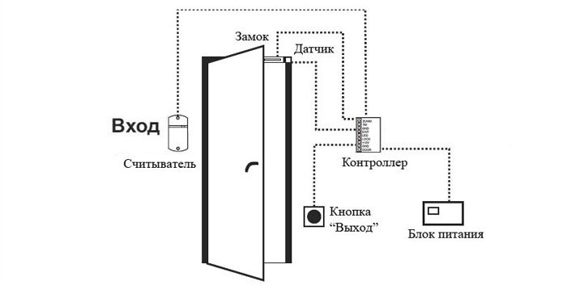
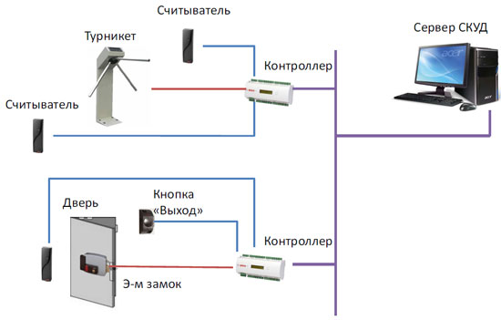
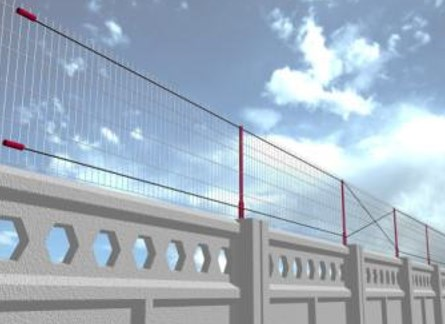
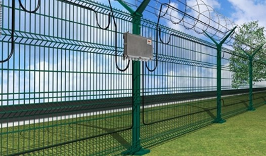
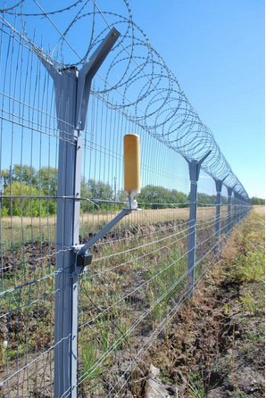
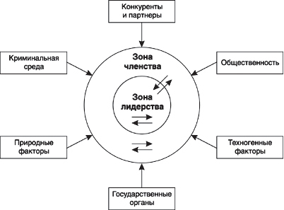
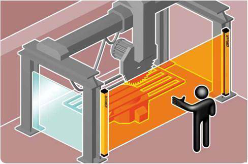

Представляем вашему вниманию информацию по актуальным вопросам безопасности и защите цифровых данных. Надеемся, эта подборка облегчит специалистам по ИБ поиск релевантной информации в интернете, поможет найти практические решения для конкретных проблем, быть в курсе современных трендов.
Понятие информационной безопасности
Под информационной безопасностью мы будем понимать защищенность информации от случайных или преднамеренных воздействий различного характера, которые могут нанести ущерб как предприятию в целом, так и отдельным заинтересованным лицам. Защита информации – это комплекс мероприятий, направленных на обеспечение информационной безопасности. Более детально ознакомится с методами защиты можно перейдя в соответствующий раздел нашего сайта Так же хотелось бы отметить, что безопасность информации определяется отсутствием недопустимого риска, связанного с утечкой информации по техническим каналам, посредством воздействия на данные или систему.
Информационная безопасность по ГОСТу
В ГОСТе, в понятии защита информации, вводится 3 определения, а именно: конфиденциальность, целостность и доступность. А) Конфиденциальность – состояние информации, при котором доступ к ней осуществляют только лица, имеющие на него право. Б) Целостность – состояние информации, при котором отсутствует любое ее изменение либо изменение осуществляется только преднамеренно лица, имеющими на него право; С) Доступность – состояние информации, при котором лица, имеющие право доступа, могут беспрепятственно использовать информацию.Понятие угроз
Угрозой информации называют потенциально возможное влияние или воздействие на автоматизированную систему с последующим нанесением убытка чьим-то потребностям. На сегодняшний день существует более ста позиций и разновидностей угроз информационной системе. Важно проанализировать все риски с помощью разных методик диагностики. На основе проанализированных показателей с их детализацией можно грамотно выстроить систему защиты от угроз в информационном пространстве. Чаще всего угроза является следствием наличия уязвимых мест в защите информационных систем (таких, например, как возможность доступа посторонних лиц к критически важному оборудованию или ошибки в программном обеспечении).
Основные уязвимости возникают по причине действия следующих факторов:
- Несовершенство программного обеспечения, аппаратной платформы
- Разные характеристики строения автоматизированных систем в информационном потоке
- Часть процессов функционирования систем является неполноценной
- Неточность протоколов обмена информацией и интерфейса
- Сложные условия эксплуатации и расположения информации
В основном под защитой предприятия понимают СКУД, так как эта система позволяет отслеживать вход/выход сотрудников, а так же попытки несанкционированного доступа к помещению
СКУД
Система контроля и управления доступом, или СКУД, – это элемент системы безопасности, созданный на основе технических устройств и электронных систем управления, объединённых в единую сеть, работающую на специально разработанном программном обеспечении. Кроме этого, система контроля доступа позволяет автоматизировать учёт рабочего времени на предприятии и в офисе, тем самым облегчая работу кадровой службы организации.
Виды системы контроля доступом
Автономные – это системы, обеспечивающие контроль за отдельным или несколькими помещениями, объединёнными общим назначением, когда управление работой осуществляется при помощи отдельного контроллера. В таких установках контроллер управления не связан с прочими электронными устройствами управления, а работает автономно. Точкой доступа на контролируемую территорию, как правило, выступает входная дверь. Автономные системы контроля обычно работают только на "вход".
Сетевые – это системы оснащаются более мощным и функциональным контроллером (или группой), обеспечивающим работу СКУД на значительных по площади помещениях, где одновременно может находиться большое количество людей. В таких системах точками доступа служат проходные предприятий или иные сооружения, а в качестве исполнительного механизма могут использоваться турникеты. Идентификаторы могут быть различного типа(например персональная магнитная карта), а сами исполнительные механизмы оснащаются дистанционными считывателями. Сетевые СКУД используются повсеместно, они являются очень хорошей системой контроля как на территории предприятия, так и на ее периметре (Например - на КПП)
Принцип работы беспроводной СКУД такой же, как и в сетевой с единственным отличием - к элементам системы не нужно подводить монтажные провода. Но взамен возникает проблема передачи данных.На данный момент многие компании стараются свести к минимуму эту потерю, но такая проблема пока еще существует
Cистемы охраны периметра
Область применения:
Состав:
Большинство систем охраны периметра независимо от способа обнаружения нарушителя имеют следующую структуру: Тревожные извещатели различных типов; Центральный контроллер, принимающий и интерпретирующий сигналы от внешних датчиков; Источники энергоснабжения; Исполнительные устройства и механизмы: тревожные сирены и стробоскопические маячки, реле для управления блокирующими устройствами, реле для связи с другими системами, интегрированными в общую систему безопасности.
Разновидности систем охраны периметра:
Емкостные
Принцип срабатывания заключается в определении изменения показателей электрического поля при приближении нарушителя. Фактически это сеть из проводников , сформировавшая электрический контур. Емкостные системы используются преимущественно на ограждениях большой протяжности. Сигнал тревоги подается, если емкость детекторов была динамично изменена при приближении нарушителя или касании.
Вибрационные
Вибрационные системы охраны периметра состоят из специального сенсорного кабеля, который является разновидностью электромагнитного микрофона. При воздействии на кабель генерируется звуковой сигнал его улавливает специальный анализатор, присоединенный к торцевой части кабеля. Он прослушивает поступающие из кабеля звуки, очищает их от помех и посторонних шумов, анализирует и сравнивает с эталонными значениями, заложенными в память. По результатам сравнения подается сигнал тревоги. Использование вибрационного кабеля довольно разнообразно. Он может применяться как в легких ограждениях вроде натянутой сетки «рабица», так и в капитальных кирпичных или каменных заборах, на крышах зданий и сооружений или на земле для обнаружения подкопов.
Радиолучевые
 Устройство состоит из двух частей передатчика, генерирующего объемное электромагнитное поле эллиптической формы и приемника который воспринимает излучение и определяет степень его изменения. Если уровень искажения получаемого сигнала превысил пороговое значение, подается сигнал тревоги. Функционирование данного устройства происходит по принципу эффекта Доплера.
можно Пройдя по этой ссылке
Каждая организация сталкивается с проблемами, которые могет помешать ее работе. Одними из таких проблем являются угрозы
На сегодняшний день угрозы подразделяются на два вида: внешние и внутренние.
 Внешние угрозы:
Конкуренты
Недобропорядочные конкуренты могут использовать самые разные приемы, для того, чтобы "победить". Наиболее популярной угрозой является воровство данных, которые могут нести выгоду.
Природные факторы
Нельзя сбрасывать со счетов и природу. Наводнения, землетрясения,оползни - все это может нанести непоправимый вред организации, поэтому не принимать во внимание природные явления будет серьезной ошибкой.
Техногенные факторы
Пожары, утечки газа и прочие угрозы, исходящие от того, что сделал человек тоже не стоит оставлять без внимания. Минимальная подготовка обязательна для каждой организации
Внутренние угрозы:
Конфликты среди работников организации
Примером угроз первого вида может быть скрытый конфликт между структурными подразделениями предприятия или сотрудниками одного и того же подразделения.
Конфликты среди лидеров
Одна из самых опасных угроз, и ее так же легче объяснить на примере: один из лидеров организации принял решение, не посоветовавшись с другими. Возник конфликт, который перерос в развал организации.
Конфликт "работник-лидер"
Угроза может возникнуть по разным причинам.Со стороны работника конфликтные ситуации могут вытекать из некомфортных условий для работы, задержки выплат заработной платы и т.п. Со стороны руководителя причиной может стать коллективное систематическое опоздание на работу, некачественное или несвоевременное выполнение поставленных задач
Так же не стоит забывать, что внешние и внутренние угрозы взимосвязаны. Например, конкуренты могут целенаправленно усложнять отношения работников,чтобы ослабить или даже разружить организацию соперника.
К организационным принципам относятся реализующие в целях безопасности положения научной организации деятельности:
Принцип защиты временем
Этот принцип основан на сокращении до безопасных значений длительности нахождения людей в условиях вредных воздействий (ионизирующее излучение, шум и т.п.). На основании данного принципа для работников вредных производств устанавливаются продолжительность рабочего дня, производственный стаж, дополнительные отпуска и другие льготы. «Защита временем» уменьшает риск повреждения здоровья работающего, но не изменяет класс условий его труда.
Принцип информации
Принцип информации состоит в отображении в той или иной форме свойств объективной реальности, необходимых для принятия решений, направленных на обеспечение безопасности. Примеры: различные виды и формы обучения по безопасности труда, нормативная документация, предупреждающие плакаты, знаки безопасности, ведение статистического учета производственного травматизма и профессиональной заболеваемости и т.д.
Принцип нормирования
Принцип нормирования состоит в регламентации условий, соблюдение которых обеспечит заданный уровень безопасности. Нормы являются исходными данными для расчета и организации мероприятий по обеспечению безопасности. При нормировании учитываются психофизиологические характеристики человека, а также технические и экономические возможности обеспечения безопасности. Лимитирующим показателем при нормировании вредных факторов является отсутствие патологических изменений в состоянии здоровья человека.
Принцип несовместимости
Принцип несовместимости заключается в пространственном и временном разделении объектов реального мира, основанном на учете природы их взаимодействия с позиций безопасности.Такое разделение преследует цель исключить возникновение опасных ситуаций, порождаемых взаимодействием объектов. Этот принцип весьма распространен в различных областях техники. Рассмотрим принцип несовместимости на примере хранения веществ. По возможности совместного хранения вещества делятся на восемь групп:
- I – взрывчатые вещества;
- II – селитры, хлораты, перхлораты, нитропродукты;
- III – сжатые и сжиженные газы (горючие, поддерживающие горение и инертные);
- IV – вещества, самовозгорающиеся при контакте с воздухом или водой (карбиды, щелочные металлы, фосфор);
- V – легковоспламеняющиеся жидкости;
- VI – отравляющие вещества (мышьяковистые единения, цианистые и ртутные соли, хлор);
- VII – вещества, способные вызвать воспламенение (плотная и крепкая серная кислоты, бром, хромовая кислота, перманганаты);
- VIII – легкогорючие материалы (нафталин, древесная стружка). Хранить совместно разрешается только вещества, входящие в определенную группу. Кроме того, каждое из веществ VII группы должно храниться изолированно.
Принцип резервирования
Резервирование элементов предусматривает параллельное включение дублирующих элементов, выполняющих одну и ту же функцию, хотя для этого достаточно одного элемента. Оно может быть активным, когда оба элемента работают одновременно, или пассивным, когда работает только один элемент, а второй включается в работу при отказе первого.
Принцип эргономичности
Антропометрические требования сводятся к учету размеров и позы человека при проектировании оборудования, рабочих мест, мебели, одежды и др. Психофизические требования устанавливают соответствие свойств объектов особенностям функционирования органов чувств человека. Психологические требования определяют соответствие объектов психическим особенностям человека.
Технические средства обеспечения безопасности можно подразделить на следующие защитные устройства: оградительные, предохранительные, улавливающие, тормозные, сигнализационные, блокировочные, устройства дистанционного управления.
Оградительные устройства
Устройство оградительное - это устройство защиты, устанавливаемое между опасным производственным фактором и работающим. Оградительные устройства могут быть выполнены в виде кожуха, дверцы, щита, планки. В оборудовании защитные ограждения предназначены, в первую очередь, для исключения случайного проникновения человека в зону движения деталей и механизмов.
Предохранительные устройства
Предохранительные устройства предназначены для автоматического отключения оборудования при выходе какого-либо параметра за пределы допустимых значений. К ним можно отнести: предохранительные клапаны; электрические предохранители; срезаемые штифты и др.
Тормозные устройства
Для обеспечения безопасной эксплуатации производственного оборудования их оснащают надежно работающими тормозными устройствами, гарантирующими в нужный момент остановку машины.Тормозные устройства могут быть механическими, электромагнитными, пневматическими, гидравлическими и комбинированными.
Сигнализационные устройства
Сигнализация на стационарном, передвижном оборудовании предупреждает обслуживающий персонал о режимах работы машин и механизмов или наступающей или наступившей опасности, что очень важно для своевременного принятия необходимых мер.
Блокировочные устройства безопасности
Блокировочные устройства не являются физическим препятствием для проникновения работника в опасную зону оборудования. Блокировочные устройства срабатывают при ошибочных действиях работника или опасных изменениях режима работы машин, при поступлении информации о наличии опасности травмирования через имеющиеся чувствительные элементы контактным и бесконтактным способом.
- ^
- Вверх